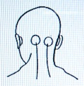
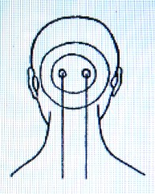

病気の分析 ２ 眼病・耳病・鼻病・顔面神経痛（岡田先生療病術講義録より）
明主様御講義 「上体の中部」 （昭和11年7月）
「この前は上体の上部の話でしたが、今日は上体の中部であります。」 （「岡田先生療病術講義録 下巻１」より）
明主様御講義 「眼
病」 （昭和11年7月）
「一番の眼目は眼で、眼にも種々な病気がある。
又この眼病は割合多くて治り難いのでありますが、眼そのものの病気としては治り難い事はない。
しかし誤れる療法の為に助かる眼も駄目になってしまう場合がよくあるのであります。
近来非常に多いのは何といっても近眼であります。有難くない事には、日本は今・・・世界一の近眼国だという話です。

そうして近眼は、多く乱視を伴うものであります。
それではいかなる原因かと申しますと、初め頸髄から延髄付近の両側に水膿が溜結する。
その為に血管が圧迫され、眼の栄養、つまり血液の送流が妨げられる結果、眼の栄養不足を来すので、それが為視力が弱り遠方が見えない。
ちょうど衰弱した人に遠路を歩かせる様なものであります。
それが近眼の原因であって、又乱視は同じ原因で、光線と物体映写の刺戟に眼の方が負けるのであります。
よく乱視の人は日向を見るとまぶしがるのは、光線の刺戟に堪える力が乏しいからであります。
薮睨（やぶにら）みなどはやはりこの類（たぐい）であります。
遠視は近限とは違う。
近眼の方は、眼は確かではあるが、営養不良の為ですが、遠視は老齢等の為、眼自体の衰弱であります。
近眼は近来非常に多く、特に小学生に沢山あります。
それはなぜかというと、体内にある毒素即ち主に天然痘の残存毒素が小学校へ入って頭を使い始めると、その為に頭脳に向って延髄付近に集溜し固まる結果、前述のごとく眼の営養不良を来し近眼になるのであります。
昔は近眼などほとんど無かったであろうと想います。
もっとも近代文明は活字の文明とも言うべく、どうしても細い字を読まなくてはならない。
それも別の原因をなしているのは勿論であります。
又、今日まで「天然痘の残存毒素」が判らぬ為に、近眼の原因も判らぬのは止むを得ない事であります。
又若くして遠視になる人もあります。
これはどういう訳かというと、老人の死霊が憑った場合であります。
鳥目というのがありますが、これも矢張り鳥の霊が憑るので、夜は見えない。
それに引換え獣は昼間より夜の方が割合見える。猫などその代表者でありましょう。
本来、日本人は鳥的人種で、西洋人は獣的人種であります。
大体、近眼乱視などは営養不良が原因でありますが、他の眼病は全然違うのであります。
他の眼病というのは、水膿や毒血が眼球へ集溜する、これが原因であります。
眼病で一番軽いのはトラホームであります。
これは瞼（まぶた）の裏へブツブツが出来る。
これは主に上瞼に多く下瞼は少いのであります。
それによく似たので濾胞性結膜炎というのがある。
これはトラホームの反対で下瞼に多く粒も細い。
小学校などでよく言われる病気でトラホームより治りいいのです。
トラホームのブツブツはよく手術しますが、これはニキビを一つ一つ潰すようなものであります。
この手術をした後一、二年位はいいが復（また）出る。
手術しては出来又手術しては出来しつつ段々悪化してゆくのが多いのであります。
本療法で施術すると非常によく治る。どんなトラホームも治ります。普通は一週間か二週間で治ります。
上瞼を一寸上へ上げただけで真赤になっているから判ります。
悪化して来ると眼がゴロゴロします。もっと酷くなると、強い痛みで夜も眠られない程になります。
そうして眼の水晶体を擦るので磨（すり）硝子のようになり、段々見えなくなるのであります。
原因は、涙に毒素があって粘膜を刺戟し、一種の発疹をするのであります。
涙にも涎（よだれ）にも唾にも鼻汁にも、有毒と無毒とがあります。
肥厚性鼻炎や口唇が糜爛（びらん）するのは皆有毒の為であります。
歯が悪くなるのは、唾に毒素があるからであります。
唾液や鼻汁、涙の毒素は、未だ判っていない様であります。
涙に毒素がある為に瞼の裏が荒れる。
その毒素の弱いのが濾胞性結膜炎の原因で、酷いのがトラホームと思えばいいのであります。
なぜ涙に毒素があるかというと、元来、涙は眼を保護するもの、あるいは眼を清潔に洗う為のもので、水分即ち一種の漿液であって、
眼へ出る前一旦涙嚢（るいのう）に溜るので、その場合その人に毒素が多い為、漿液として通過する際それが混入するのです。
次にいろいろな眼病があります。
角膜炎とか結膜炎、糜爛性結膜炎、白内障、底翳（そこひ）等でありますが、吾々の方では眼病の種類は問題ではない。何となれば治療法が同一だからであります。
底翳なども皆、膿や毒血の集溜固結によるものであります。
黒底翳は、一番重いとされております。
これは眼底へ黒い毒血が凝結するので黒く見え、青底翳は青く見えるので、これは膿の青いのが溜るのであり、白底翳は膿の白いのが溜るから白く見えるのであります。
白底翳が一番治りいいというのは、白い膿が一番弱性だからで、青いのはそれより悪性なもので、毒血はこれ以上の悪性であります。
癌なども膿と毒血のと両方あるが、毒血が頑固であります。
白内障は、眼球へ膿が集溜するんで、これは必ず治るのであります。
白内障や白青底翳は治るが、黒底翳は難しいものであります。
眼の玉が白くなっているのが白内障で、眼球そのものが、まるで田螺（たにし）を茹（ゆ）でたようになります。
早期に膿が固まらない内ですと容易に治りますが、時日を経過して固まったもの程日数がかかるのであります。
目星（めぼし）も非常に治りいいもので、大抵の目星は一週間位で治ります。これは普通は一つですが数個のもあります。
眼を診査するには、最初前額からこめかみ辺へ掌を触れ、熱ければ毒素があるので、その他眉の辺上瞼等を押し痛む人は眼球に毒素が溜っている証拠ですから、治療は眼を中心に頭部、顔面、後頭部等を浄血すればよいのであります。
頬の方の耳の際（きわ）を押して痛む人は、顔面神経に故障があります。
元来人間は上部即ち頭部、頸部、肩部付近に滞溜する毒素は主に後部でありますが、絶えず鼻耳口などから排泄されようとしている。
それは後方には穴がないから、孔のある前の方へ流動するのであります。
それの表れとして、眼を使う時は眼へ毒素が集溜され眼病になるのでありますが、実はその際の眼は、毒素排泄の役目を遂行せんと一時自分の家へ集溜さした様なものでありますから、時日の経過によって目脂等で排泄され浄化されるのであります。
しかし、その事が判らないと、患者に対し極力眼を使わせない様にしますが、本当に治す意味から言うと眼を使ってもよい。
なぜなれば、そうすれば排泄すべき毒素をより速く眼に集溜させるからであります。
出来るだけ毒素を寄せて排泄さした方がよいのであります。
眼鏡は、出来るだけかけさせない方が好いので、これは胃病の場合の胃の薬と同じ事で、眼鏡の力を借りるから眼の力は退化するのであります。
次に、眼の養生法をお話致しましょう。
それは寝ていて本を読むのは極悪い。
以前、眼の悪い患者を治療していた時、なかなか治らぬので、ふと気が付いて、寝ていて本を読むのではないかと訊（き）くと「そうだ」と言うので、そこでよく説いて、それをやめさせてから良くなった事があります。
元来人間は、横になれば眠る事に決っている、横になって本を読むのは天理に外れてる。
本を読むのは起きて机にでも向うのが本当であります。
ですから眼の悪い人には、それを訊いてみる必要があります。
又、電車の中で読むのは、見ている物が動くので極わるい。
夜電車内で電灯の薄暗い光で読むのは殊に悪い。
私は先に大森から東京へ通っていた事がありますが、退屈するので新聞など読んだが、ドシドシ視力が衰えるのでそれに気が付き止めた事があります。
眼は洗うという事がありますが、これも感心出来ない。
それは涙程結構なものはない。硼酸（ほうさん）などで洗うと一時良いようですけれど、眼に薬を入れるから薬が沁みる。
その薬が時日の経過によって毒素になるからで、長く眼を患い、いつも眼がクシャクシャしている人は薬の中毒が多いのであります。
三月程前に、眼科医で眼病となり、二ケ月半程あらゆる最新の治療をしても治らなかったのが、私の所へ来て一週間ですっかり治った人があります。
その時の記録を御本人が書いてくれましたから、それを読んでみます。」
体験談 原文のまま
「私は明治二十六年以来四拾年以上眼科専門医として開業医生活を続け今日に及んだ者です。
故に実地医家として専門治療には相当に自信あるつもりです。
しかるに本年三月十三日入浴の際不幸、石鹸かぶれの為、翌十四日より左右眼瞼（がんけん）内外眥（さい）部に僅かの糜爛を起しいささか痛みを感ぜしも敢て意とせず毎日業務に従事せり。
しかるに数日の後には病勢急に増進、上下眼瞼全部に湿疹を起し、眼瞼縁炎と共に日夜殊に夜間の掻痒（そうよう）はなはだしく、毎夜安眠する能（あた）わず実に閉口致しました。
申すまでもなく自分の専門的治療故いろいろの薬品を使用し、その他静脈注射やら太陽灯やら種々に手当致すも更に無効否薬液乱用の結果か病勢益々悪化するばかりです。
勿論三月末より休業、某大病院に某博士の診察も受け、その指示に依って治療もし、
又四月中旬には某医の特別注射療法も受けたるも、病勢少しく軽快するかと思えば両三日後には又忽（たちま）ち逆転するのみならず、
余りに攻め付けたる為ー遂に病は眼球結膜及び角膜に炎症を及ぼし、四月末には視力０．１即ち十分の一という心細き有様となりました。
それまでの実験上、最初良薬と思いしものが数日の後にはいずれも反って有害となり、又皮膚も結膜も非常に敏感となり、いかなる薬も刺戟はなはだしく耐ゆる事能わず、
と申して薬を用いねば一種言う能わざる痛むがごとき乾燥感に堪え難く、拠（よんどころ）なく日夜何回となく無数にただ麻酔薬の点眼を続くるの止むなきに至りました。
五月初めに至り、未だ嘗（かつ）て実験せし事なき病状の変態にあるいは他に何か障りにてもなきかと六日ー某祈祷者を訪（おとな）い伺を立てしところ、
昨年夏本命に当る地所を修築せし方災の為とてその方災除けの御祈祷を受け、七日間にて治すると言われ毎日通う内、
幸に痛感去り眼瞼皮膚の病状大いに軽快夜間安眠を得るに至り、視力も一旦０．５に恢復し大いに感謝しつつありしが、
二、三日にして又０．３に減じ、なお祈祷を続くる事二週三週、ついに意を決して恥しさを忍んで五月三十一日半蔵門に岡田仁斎先生の治療を受くるの止むなきに至る。
しかるに翌六月一日になって諸症状大いに軽快視力０．７に恢復、二日には０．９、六日に全視力を得るに至る。
その恢復の速き事実に驚くの外なし。
しかも毎日業務に従事しつつなお且つかくのごとし。
六月十一日、治療を受くる事僅かに八日にして二ケ月半余も悩みし頑固なる悪疾も忽ち全快するに至る。
実に有難く嬉しく感謝しつつ恥しき実験談を皆様に御報知致す次第であります。」 （体験談はここまで）
「この記録にある通り、一週間で眼はすっかり治りましたが、最後に瞼の糜爛だけが残りました。
私はこれは薬の中毒だと言うと、その人も「自分もそう思っている」と言いましたが、要するに薬の中毒だけが残ったのであります。
そうして眼を治療する場合は、指を触れる訳にはゆかぬから全然患部に触れないで空中を擦（こす）るのと吹くだけで治るのであります。

眼は人体の日月でありますから、日月を隠すのは雲で、これを吹き払うのは風である様に、その雲を吹き払う意味で強く吹き、そして周囲も出来るだけ浄化するのであります。
眼は後の方をよく治療するのです。
眼の悪い人に限り、眼の裏の方が非常に凝っているものでこの辺をよく浄化するのであります。
次に、婦人においては、産後七十五日は決して眼を使ってはなりません。
産後悪くしたのは一生涯治らない。ですから産後だけは充分眼を大事にしなくてはならないのであります。
又、薬の中毒で悪くなる事もあります。
以前六百六号の注射をした為に全然失明した人もありましたが、これは薬が原因ですから仲々治らない。
少しは良くなるがとても治らないから、これは二、三年経ってから来なさいと言ってやりました。
二、三年経つと薬剤は膿になるから、膿になってから溶し易いのであります。
霊的の眼病も多くあります。
これはほとんど蛇の霊で、以前私はその蛇の霊を祀って治したものですが、非常によく治ります。
これは蛇を殺す場合によく頭を潰すので、その際眼をも潰し盲蛇になるので、その死霊が人間に憑ると人間の眼が見えなくなるのです。
私は今まで祀って沢山治したのでありますが、今は忙しいのと誰もが出来ない事と迷信視せられる懼（おそ）れがある等でやめております。
以前、鶴を殺した人に鶴の霊が祟（たた）って、嘴（くちばし）で眼球を突つかれて失明したという話を聞いた事があります。これは事実あるべき事であります。
そうして蛇の祟る場合は、どういう訳かというと、祖先の死霊が霊界で蛇になり一家を守っている。
それは家門へ対する執着の為であります。
元来蛇は、執着の物質化ともいうべきものであります。
それを知らずに殺すと、元来が祖先であり、執着者であるから非常に怒るので、それが子孫へ祟るのであります。
そういう蛇はほとんど青大将で、昔から旧い家の土蔵などによく居りますが、皆それで、これは絶対に殺してはならないものであります。
鍛冶屋などで、よく火華（ひばな）が飛んで眼が悪くなりますが、これも時が経てば必ず自然に治癒されるものですから、放っておいてよいのであります。
又、瞳の見当違いの人があります。
これは某大実業家の令嬢でしたが、生来酷い薮睨みで、眼が見当違いなので、踊りの場合など顔の位置が調わない。
それを治療した所一ケ月位で全治し、踊りの際顔の位置が正しくなったと言って喜んで居りました。
これは、眼を動かす筋を水膿溜結が妨害して居ったものであります。
又、眼を開けているのが苦痛なので、自然眼を塞ぐ人があります。これは額の辺に水膿が溜結しているから、これが為重くなるのであります。
バセドー氏病で眼が飛出る事がありますが、これは後の方でお話致します。
色盲は、人間以外の霊が憑く為であります。畜生や鳥の霊などは想像も付かぬ程に物体が変って見えるのであります。
馬などは、人間が非常に大きく見えるといいます。
ですから馬が暴れた時、人間が両手を拡げると必ず停るというのであります。
で、畜生は人間の様にあらゆる色彩を見る事が出来ない。
それは人間の様にあらゆる声音言葉が現わせないのと同じ訳で、動物の音声は一種か二種より現わせない。
そのごとく色彩も一種か二、三種より判らないのであります。
又面白い事には、毒素が眼へ集溜した場合白眼の方は紅くなり、黒眼の方は白くなるのであります。
特に、眼病の治療日数は、最初において言明する事は不可能でありますから、まず一週間位治療し、その効果によって判断すべきであります。」 （「岡田先生療病術講義録 下巻１」より）
明主様御講義 「鼻
病」 （昭和11年7月）
「鼻病で一番多いのは蓄膿症であります。
蓄膿症は、鼻の孔（あな）が塞がる症状で、これには根原が二種あります。
それは、鼻柱の両脇の場合と、眉間から両眼の間に膿が常に溜っては鼻孔から出ようとする。

しかるに膿が濃い為に出切れず、途中で固まるのであります。
普通左右交互に塞がるもので、治療をすると直に通る様になります。
診査の場合、鼻柱の両側を圧して痛いのと、又眉間の中央が重いのは、そこに水膿溜結があるからで、眉間の方の患者は治癒の際、鼻血が出る事があります。
まず軽症で二、三回、重症で二、三週間で全治するのであります。
鼻茸（はなたけ）は、鳥の霊で鳥の嘴が物質化する。
それがちょうど、茸（きのこ）のようですから名付けたものと思います。
これもよく治ります。浄化作用をすれば段々畏縮し崩壊するのであります。
まず軽症で一週間、重症で一ケ月位で全治致します。
肥厚性鼻炎は、鼻汁に含まれている毒素の為で、それによって鼻孔の粘膜が荒れる。
それがおデキになり、痛み熱を持つので、常に鼻孔が乾くのであります。
これも鼻を中心にその付近をやれば毒素が解消するから治るのであります。
まず軽症で二、三週間、重症で一、二ケ月かかります。
無嗅覚は、鼻神経の元は小脳にありますから、その間の神経に水膿が溜結して無力にしている為で、それを溶解すればいいのですが、これは深部の為・・・相当時日を要するのであります。
軽症二、三ケ月・・・重症一、二年を要します。」 （「岡田先生療病術講義録 下巻１」より）
明主様御講義 「耳
病」 （昭和11年7月）
「耳は全聾と半聾、耳鳴、中耳炎、耳垂等があります。
聾（つんぼ）は、中耳炎などの為に自然的に鼓膜が破れたのと、手術などで人為的に破ったのとあります。
又その鼓膜の破れ具合によって、軽い重いがあります。
しかし鼓膜はなくとも相当に聞えるものであります。
中には、鼓膜は何とも異常がなくて聞えぬのがありますが、これは実は霊的であります。
それは木龍というて、樹木に憑依している霊で、蛇の霊又は鳥霊であります。
聾という字は、龍の耳と書きますが、龍は声が聞えないとしてあるが、音によって聞えるのであります。
蛇は、笛の音などはよく聞えるのであります。
龍には種々な龍があって、木に憑いてる龍を木龍と言い、多く大木に憑いている。
松、柳、銀杏（いちょう）等が多いのであります。これらの木は霊が憑き易い。
よく大木を伐ると祟（たた）る話がありますが、それであります。
以前生麦（なまむぎ）に大きな松があって、京浜国道を作るのにどうしてもその木を切らねばならない。
まず最初に枝を切った男はその晩に死に、次に枝を伐った男もまた死に、親方は不思議に思ってる内に病気になった例がありますが、これらは木龍の憑いてる木だったのでありましょう。
聾は木龍の憑依が多く、そういうのは鼓膜が何ともなく、耳には何ら異常が無いのに聞えないのであります。
木龍の憑いた為の聾はなかなか治り難い。
これは正しい信仰によって善徳を積むより方法は無いので、その功徳によって治るのであります。
肩が凝ったり、首筋が凝ったりするのを治している内に、今まで聞えなかった耳が聞えて来る事がよくあります。
これは頸腺から耳へ水膿が入り、固結したのが溶解されるから治るのであります。
ですから聾耳はまず治療してみなければ判らないので、従って、治療日数は最初から言明出来ないのであります。
耳鳴は、中耳即ち鼓膜の裏へ始終毒素が滲み出ている。
それが浄化されようとする。その浄化作用の微音が耳鳴であります。
それが外へ出たのが耳糞になるのであります。
これを治療する場合は、耳を中心にその周りを浄化すると共に、耳下腺の上部即ち耳の付根から頭全体をするのであります。
非常に速く治るのと、日数のかかるのとあります。
日数のかかるのは実験上薬剤中毒が多いようであります。
治療は、軽症で二、三週間・・・重症二、三ケ月位であります。
中耳炎、この病は、淋巴腺耳下腺付近に滞溜した水膿が、浄化作用によって耳から排泄されようとする痛みの為であります。
故に痛みは膿の排除の為の穿孔作用であり、熱はその膿の溶解作用であります。
それから中耳炎が発病して膿が盛んに中耳へ向って流動している時氷冷をすると、膿は中耳へ進めなくなり、方向転換して小脳へ侵入する。
これが脳膜炎であります。
ですから、中耳炎をやってる内に脳膜炎を起すのは、全く前述の訳であります。
ここで、余病について一言申しますが、本当から言えば治病中余病など起るべきはずはないのであります。
何となれば、本来の病気を治療するのですから、起るべき余病も起らないで済むべきであります。
病気を治しながら余分の病気が殖える様では本来の病気は治る訳はないのであります。
中耳炎を治しながら脳膜炎になるというのは、全くよいと信じた手当が反対の結果を招来する訳なのであります。
中耳炎は本療法によれば発病時なれば一、二回、日数経過のもので一週間位で全治するのであります。
耳垂は、浄化作用による水膿が排泄されるのでありますから非常に結構で、放任して置けば膿が出るだけ出て必ず治るのであります。」 （「岡田先生療病術講義録 下巻１」より）
明主様御講義 「顔面神経痛」 （昭和11年7月）
「この病気は、顔面の神経麻痺で症状はいろいろありますが、普通の症状としては、顔の半面又は口形が一方へ引吊るように曲り、はなはだ醜いのであります。
これは、顔面諸所を圧すと必ず痛む所があります。
その個所に水膿溜結しているから、それを溶解すれば漸次治るのであります。
原因は、頸腺や肩部に水膿が溜結し、それが顔面にまで移行するのであります。
この図は、昨年暮にやった婦人患者で、顔面屈折し、二目と正視出来ない醜さでしたが、非常に早く、二ケ月半位で全快したのであります。

この患者は、専門家から治っても二ケ年かかると言われたのであります。
しかし、発病後早期であったので、速く治ったのですが、年月を経て固まったのはとても日数がかかるのであります。
且つ病気は治っても、顔面に癖が着いているので、それは自然を待たなければならぬから・・・相当時日を要するので、長いのは二、三年位かかるのであります。」 （「岡田先生療病術講義録 下巻１」より）